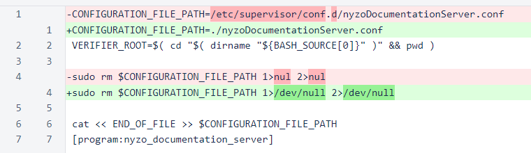
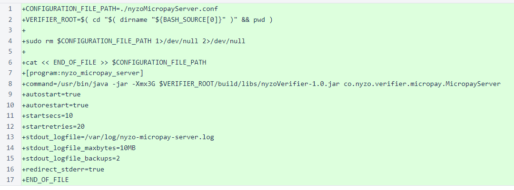
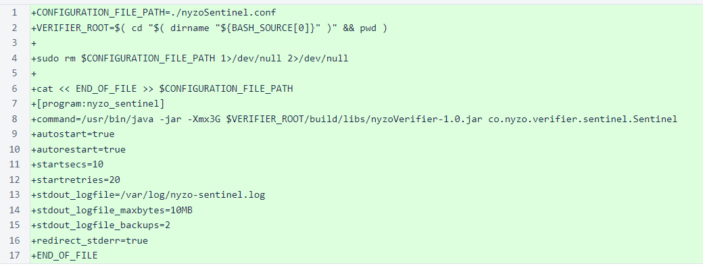
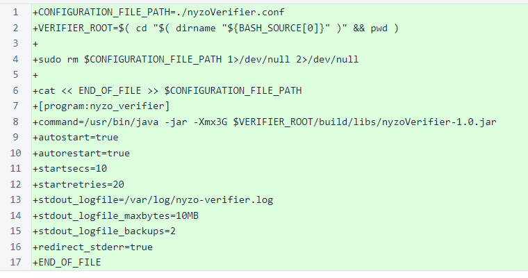

Nyzo version 555 (commit on GitHub) adds new configuration scripts and updates an existing configuration script.
This version simplifies the setup process for the verifier, sentinel, Micropay server, and documentation server. Updating to this version is neither required nor beneficial for any existing installations.
When the documentation server was released in version 553, it did not include a supervisor configuration file like previous run modes. Instead, it included a script for generating the configuration file. This was an improvement over the pre-generated configuration file, because it properly handles different locations of the nyzoVerifier directory.
This version updates the script for the documentation server, and it adds similar scripts for other run modes. The pre-generated configuration files have been left in the repository to avoid causing problems with setup instructions maintained by members of the community. If you maintain setup instructions for Nyzo verifiers, we would appreciate if you updated the instructions to reference the new configuration scripts. Eventually, we would like to remove the pre-generated configuration files from the repository, as we prefer not to retain files that are no longer necessary.
In nyzoDocumentationServer.sh, the destination of the configuration file has been changed to the current directory. This avoids the need to modify the permissions of the /etc/supervisor/conf.d directory when running the script. Also, the output of the rm command is now directed to /dev/null to avoid creating an extraneous nul file in the current directory.
The new command for this script makes the script executable, generates the configuration file in the current directory, and copies that file to the supervisor configuration directory (/etc/supervisor/conf.d).
chmod +x nyzoDocumentationServer.sh && ./nyzoDocumentationServer.sh && sudo cp nyzoDocumentationServer.conf /etc/supervisor/conf.d/
The new nyzoMicropayServer.sh script generates the nyzoMicropayServer.conf file.
chmod +x nyzoMicropayServer.sh && ./nyzoMicropayServer.sh && sudo cp nyzoMicropayServer.conf /etc/supervisor/conf.d/
The new nyzoSentinel.sh script generates the nyzoSentinel.conf file.
chmod +x nyzoSentinel.sh && ./nyzoSentinel.sh && sudo cp nyzoSentinel.conf /etc/supervisor/conf.d/
The new nyzoVerifier.sh script generates the nyzoVerifier.conf file.
chmod +x nyzoVerifier.sh && ./nyzoVerifier.sh && sudo cp nyzoVerifier.conf /etc/supervisor/conf.d/
